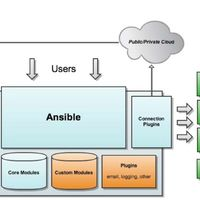
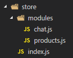
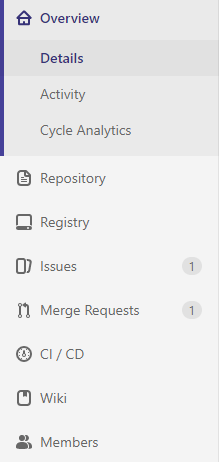
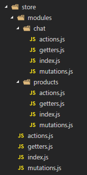
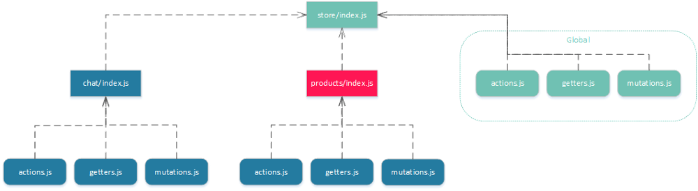

大型Vuex应用程序的目录结构
2018.06.12 10:10
4844浏览
译者按： 听前端大佬聊聊Vuex大型项目架构的经验
为了保证可读性，本文采用意译而非直译。另外，本文版权归原作者所有，翻译仅用于学习。
在编写大型应用程序时，管理前端的状态可能会非常困难。 例如对于Vue.js应用程序，有一个名为Vuex的插件，它以非常简单的方式提供状态管理，并官方建议使用以下应用目录结构：

对示例很感兴趣，可以查看官方Vuex存储库（vuejs / vuex - shopping-cart）或者我创建的"购物车"示例（igeligel / vuex-simple-structure）。
官方推荐的目录结构是非常不错的，整个Vuex moudules看上去非常简单并且包含了moudules作用域中的actions，getters和mutations。共享actions，getters或者mutations被直接保存到store目录中。然后所有的modules，全局actions，getters和mutations被导入一个index.js文件中，并在Vuex module的构造函数中再次导出。然而，当你moudules越来越多的时候就会出现问题，对于大型项目来说这是普遍的。想一下像GitLab这样的大型项目，它包含非常非常多的modules。比如GitLab存储库视图的侧边栏看起来是这个样子的：

每个菜单条目基本上都是一个包含几个actions，getter和getters和mutations的module。 所有这些都列在单个module文件中。 这不会很好地扩展，因为考虑到module需要的功能越来越多，module就会变的非常大甚至会超过1000行代码。
但是这个问题有一个解决方案。 我们可以在module目录中提取actions，getters和mutations。 全局actions，getters或mutations可以直接存储在store目录中。 应用程序结构如下所示：

基本上，你仍然有可能使用全局actions，getter和mutations，但我并不推荐它，因为它并不是真的有必要。 采用这种方法，我们将拥有多个独立的文件。 聊天module的所有actions，getters和mutations将通过聊天目录内的索引导入。 这个module将被导入到全局store。 需要注意的是，你应该在模块内设置命名空间选项，以便你拥有适当的命名空间。 这是在store /index.js文件中完成的：
import Vue from 'vue';
import Vuex from 'vuex';
import chatModule from './modules/chat/index';
import productsModule from './modules/products/index';
Vue.use(Vuex);
export default new Vuex.Store({
modules: {
chat: chatModule,
products: productsModule,
},
});在这个store里面，我们有两个module：chat和product。 两个模块都包含actions，getters和mutations，并被导入到module的主module文件index.js中，然后再次导出。 最后，导出的数据可以被store module使用。

这将注册modules，并且代码将以这样的方式分离，并且它仍然是可读的，可导航的和可维护的。 实现实例可查看bstavroulakis/vue-wordpress-pwa或者我自己实现的实例igeligel/vuex-namespaced-module-structure。 这个应用程序结构将很好地处理中小型应用程序。 代码库的新开发人员不会努力寻找业务逻辑所在的地方，因为每个模块都在组件内部有适当的名称和引用。 使用module真的很有趣，这在官方文档中有解释。
Fundebug错误实时监控为您的Vue项目保驾护航！
但是这样也有一个问题。当你后端团队创建越来越多的API时，并且程序变得越来越复杂，项目甚至达到20,30或者50个module。虽然维护没有问题，但是新加入的实习生可能就会因为架构纠结了，因为他不确定业务逻辑的调用方式。然后你就会想如何更好去架构。你可以直接在组件中执行API调用，但是这造成巨大混乱，因为组件将会持有业务逻辑。组件应该只呈现数据，不处理数据。
在React中有容器和组件的概念。 它没有被Vue.js强制执行。 容器只是组件，但它们也可以从store 获取数据并与store交互。 组件就在那里保存数据并渲染它。 他们通过道具与上层集装箱进行沟通。 让我们想象一下我们应用程序中的聊天窗口小部件，它需要从商店获取某种数据，或者从API获得更好的数据。 我们将通过从聊天中获取所有消息并且不提供实时支持来创建一个简单示例。 让我们假设我们有一些容器来保存整个聊天。 该容器将与商店通信以更新数据或将数据填充到表示组件。 整个架构在这个小图中显示：

在这个系统中，我们有一个名为Chat.vue的容器，它与我们的store module chat进行通信。 此chat module还通过调用API并更新store来处理逻辑。 当状态最终更新容器时，Chat.vue也将通过使用计算属性进行更新，计算属性将由Vue.js和Vuex的反应性更新。 之后，该属性将作为props(传值)传递给ChatList.vue。 由于props(传值)是该组件中的一个数组，所以会发生一次迭代，它将呈现一组ChatListElement.vue组件，它们负责呈现聊天消息和元信息。
有了这种模式，我们已将应用程序分为三部分。 一部分是业务逻辑，它存在于store的module内，或者更普遍地存储在store内，容器元素负责获取数据并将其填充到呈现组件，这些组件仅用于呈现数据。 这为我们提供了很好的模块化并支持单一责任原则。 它还提供了很好的可测试性，因为你可以自行测试此结构的每个部分。 他们一起将形成某种综合测试。 但是这可以在另一篇文章中讨论。
现在想象应用程序会增长很多。 很多的意思是指是你有几个modules，不清楚这些modules在哪里使用，哪些组件取决于它们，哪些不取决于它们。 在巨大的应用中，这可能是一个真正的问题。 想象一下，一个新的代码库可以忽略50个模块和大约50个组件。 他会有一个很大的问题来导航。
Vuex推荐是在store目录中有业务逻辑特征的目录。 有时与使用这些modules的容器的连接可能会断开，并且不清楚使用哪些Vuex modules的位置。 有些modules可能只是在那里，因为有一个容器，所以将这个业务逻辑放在处理数据的容器附近就好了。 让我们稍微调整应用程序。 该模板基于vuejs-templates/webpack。
<img src="large-scale-vuex-application-structures/application-structure.png" />
唯一的区别是我将Vuex安装到这个模板中，设置它并在src目录下面添加modules目录。 稍后可以在此博客文章中找到此应用程序。 与此目录的区别在于它包含modules。 不要将这些modules与Vuex modules混淆。 有可能是一个更好的名字，所以如果你知道一个名字，请在这篇文章下评论它。 因此，在modules目录中，我们有这个Vue.js应用程序的模块。 它看起来像这样：

在modules目录中，有几个目录描述不同的功能。例如，我们有chat和product功能。但有趣的是，它们在这些module目录中,有一个store目录，一个index.vue文件和组件。清除一些干扰，我们只会看一下单个文件组件文件。 index.vue被用作容器组件。此容器将从store中提取所有数据，并将这些数据作为props(传值)传递给组件。组件ChatList.vue和ChatListElement.vue就是在那里从组件中获取数据并触发到store的行为，该store全局连接到Vue.js实例。最大的问题是为什么这些组件不在组件目录中。原因是这些组件是专门为此功能而制作的。如果他们将被重新用于其他功能，那么我会考虑将其移入组件目录。基本上这里的问题是，如果组件以某种方式被重用。然后我们应该将组件重构到共享组件目录中。现在来看store。它与其他模式基本相同，但移入本地目录store。要注册它，我们使用Vuex的registerModule函数。该功能将动态注册Vuex模块。通常它被用于插件，但我们将在这里使用它来更好地分离问题。在index.vue文件中，我们可以通过Vue.js访问生命周期函数，并且在创建的函数中，我们可以安全地创建module。
import { mapGetters } from 'vuex';
import store from './_store';
import ChatList from './_components/ChatList';
export default {
name: 'ChatModule',
components: {
ChatList,
},
computed: {
...mapGetters({
messages: '$_chat/messages',
}),
},
created() {
this.$store.registerModule('$_chat', store);
},
mounted() {
this.$store.dispatch('$_chat/getMessages');
},
};我们用$ _作为前缀，表明这个module是私有的，因为它只在module中可用。 注册后，该store将填充到我们的全局Vuex store。 从那里开始，我们可以在组件内使用这些Vuex功能。 要注册store，我们需要以某种方式将Vuex功能绑定到Vue.js实例。 这可以通过创建一个空的Vuex store，导出并将其附加到Vue.js构造函数来轻松完成。 查找这些文件以获取想法（store/index.js，main.js）。
如果我们发现自己需要某种全局store，我会在store目录下创建一个Vuex module，并使用推荐的结构。 例如，如果我们需要在应用程序内部的不同位置进行身份验证，最好以不与容器耦合的方式进行共享。 这对于拥有共享的Vuex module将是一个很好的实例。

一些问题：可能不清楚哪些module需要全局或本地可用，而且很难做出决定。 它也很难找到应该是全局的组件，但基本上，所有通用组件应该位于由不同module使用的目录中。 维持这种结构真的很难，但最终我认为为了扩展应用程序是值得的。 另一个问题是命名。 你现在有遍布整个地方的组件目录。 将模块_components中的目录命名为私有组件可能更好，但这是个人偏好。
这个结构的一个很好论点是modules在某种程度上是可以提取的。 如果一个功能变得太大，你可以通过在src/modules目录内的目录中创建一个module来提取它，然后制作一个npm软件包。 您需要导出的唯一东西是容器组件。 然后，这个npm包可以托管在公司的注册表中，也可以公布在npm上。 只要确保以某种方式使Vuex模块的行为可配置。 另一个很好的论点是测试可以用特征范围的方式编写。
最积极的论点是Vuex module的范围，容器和组件对于每个正在阅读代码的开发者都是清楚的。 由于在整个应用程序中使用关注点分离原则，因此可以快速找到每个功能的业务逻辑并且功能很容易测试。
不同结构的例子：
点击查看更多内容
8人点赞
0 评论
共同学习，写下你的评论
暂无评论
相关文章推荐

正在加载中
作者相关文章
相关课程

实战

实战

实战


就业班